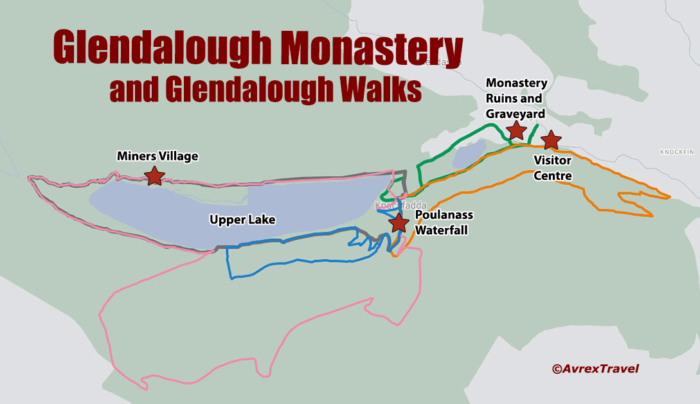

Glendalough
Glendalough, nel Wicklow, è un villaggio che si trova vicino al sito di un antico monastero. Il monastero fu fondato nel VI secolo dall'eremita Kevin di Glendalough e distrutto nel 1398 dalle truppe inglesi.
Mappa di Glendalough
Le falesie di granito di Glendalough, sulla riva nord ovest del lago Superiore, sono popolari fra gli arrampicatori. I massi sotto le falesie sono eccellenti per il bouldering.

Orari e biglietti
Orari e biglietti a Glendalough L’ingresso all’area monastica e ai laghi è sempre libero e gratuito. Non ci sono costi quindi per vedere i siti monastici (chiese e torre), tuttavia, come avviene anche alle Cliffs of Moher, il parcheggio e l’ingresso al Visitor Center sono a pagamento. Il centro visitatori è aperto da metà marzo a metà ottobre tutti i giorni dalle 09.30 alle 18.00, ultimo ingresso alle 17.15, da metà ottobre a metà marzo, tutti i giorni dalle 09.30 alle 17.00, ultimo ingresso alle 16.15. E’ chiuso dal 23 al 29 dicembre compreso. L’ultimo ingresso agli edifici e ai servizi igienici è sempre 45 minuti prima della chiusura. La durata media della visita è di circa 1 ora/ 1 ora e mezza. Vi ricordiamo che in alta stagione la città monastica è molto affollata durante il giorno: è quindi preferibile arrivare molto presto la mattina o verso il tramonto per evitare la massa di turisti che arrivano con gli autobus.

Glendalough Waterfall
The Glendalough Waterfall Walk (the Pink Route) is a nice short stroll. And, while there is some incline at the beginning, it’s a good option if you’re short on time and don’t fancy exerting yourself too much.